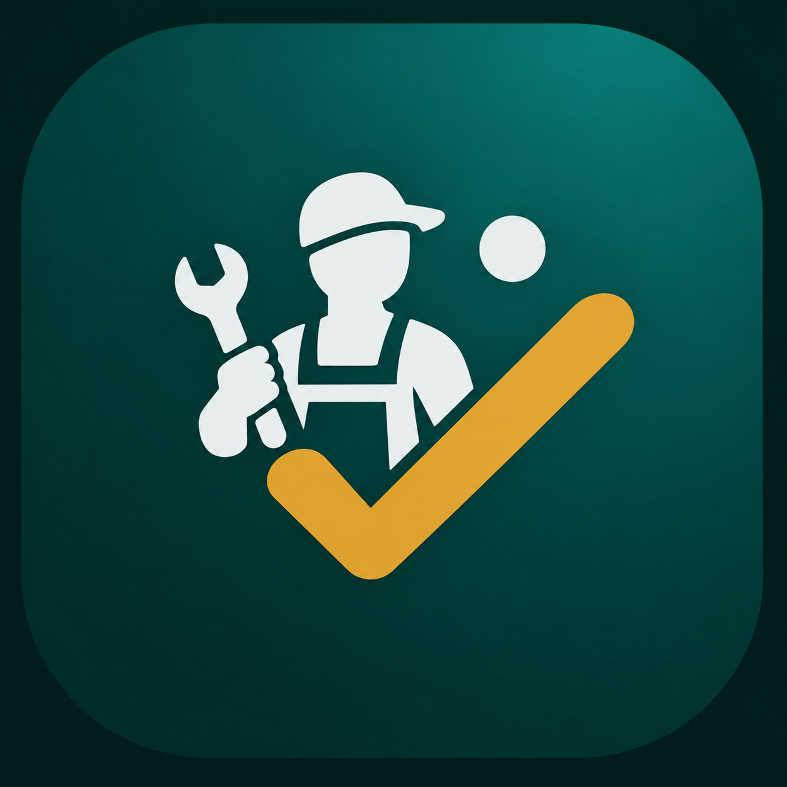

يُعد حي سلطانة من أكثر الأحياء حيوية في المدينة المنورة، مما يجعل كفاءة التمديدات الكهربائية أمراً ضرورياً لكل منزل أو منشأة. تواجه المباني أحياناً أعطالاً مفاجئة نتيجة ضغط الاستخدام أو تقادم الأسلاك. تقدم شبكة المنجز عبر هذه الصفحة دليلاً عملياً للتعامل مع هذه المشاكل بأمان واحترافية.
تتكرر في المباني السكنية والتجارية بالحي عدة أعطال شائعة مثل انقطاع التيار المتكرر، واحتراق المفاتيح أو المقابس، وصدور أصوات طقطقة من لوحة التوزيع الرئيسية. غالباً ما تنتج هذه المشاكل عن زيادة الأحمال الكهربائية نتيجة تشغيل الأجهزة عالية القدرة في وقت واحد. تجاهل هذه الأعطال قد يؤدي إلى تلف الأجهزة أو أخطار جسيمة تتطلب تدخلاً عاجلاً.
توجد حالات لا تقبل التأخير وتستوجب الاستعانة بفني كهرباء مؤهل فوراً لتجنب المخاطر. يشمل ذلك شم رائحة احتراق أو رؤية أدخنة تصدر من المقابس، أو حدوث التماس كهربائي يتسبب في فصل قاطع الدائرة الرئيسي بشكل متكرر. محاولة إصلاح هذه الأعطال بنفسك دون أدوات الفحص المناسبة تعرض السلامة الشخصية للخطر.
يعتمد اختيار الفني الصحيح على خبرته في التعامل مع المخططات الكهربائية الحديثة والقديمة على حد سواء في المدينة المنورة. الفني المحترف يبدأ دائماً بفحص النظام بدقة لتحديد السبب الجذري للعطل بدلاً من تقديم حلول مؤقتة. كما أن الالتزام بمعايير الأمان واستخدام أدوات القياس السليمة يعد معياراً رئيسياً للجودة.
تختلف تكلفة صيانة وإصلاح الأعطال الكهربائية بناءً على عدة عوامل تقنية بحتة وليست أرقاماً ثابتة. تتأثر التكلفة بحجم العطل، ونوعية القطع أو القواطع التي يحتاج النظام لاستبدالها، والوقت المستغرق في التشخيص والتمديد. الفحص الميداني هو الطريقة الأدق لتحديد المتطلبات الفعلية لأي عمل كهربائي.